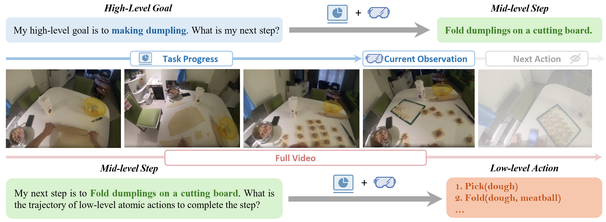
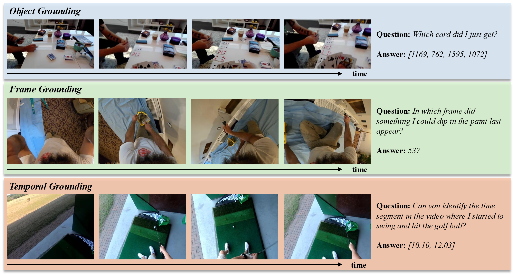
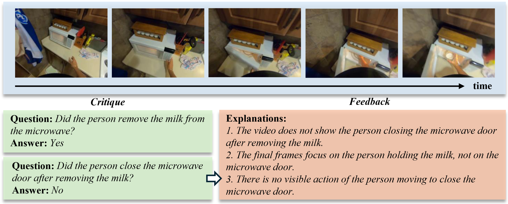

Given that the utilization of foundation models in Embodied AI remains an open research question, we carefully design four types of interrelated tasks for comprehensive assessment: (i) video question-answering, (ii) hierarchy planning, (iii) visual grounding, (iv) reward modeling.
1. Video Question Answering
Previous evaluation studies on egocentric vision have predominantly focused on static images, constrained by the input format limitations of earlier MLLMs. However, recent advancements in API-based and video-based MLLMs have demonstrated significant progress. Since our real world is inherently dynamic and humans frequently process substantial amounts of video data, it is crucial to evaluate the video understanding capabilities of MLLMs. Considering the essential abilities for observing and interacting with the real world from a first-person perspective, we decompose the content of video modalities around “myself” into three main elements: object, action, and scene. Furthermore, we explore a series of fine-grained dimensions from these elements.

Figure 2: Case of video question answering.
2. Hierarchy Planning
Recently, a hierarchy planning framework has been proposed to combine the advantages of foundation models and traditional methods in Embodied AI. In detail, foundation models are used as the planner to decompose high-level task instructions (e.g., “cook salmon”) into either mid-level steps (e.g., “# put salmon in the microwave’) or low-level atomic actions (e.g., “find(microwave)”), which is much more convenient for controlling. Therefore, we design two types of planning tasks: high-level goal to mid-level step (High-to-Mid), and mid-level step to low-level action (Mid-to-Low).
Figure 3: Case of hierarchy planning.
3. Visual Grounding
While natural language is effective for human communication, it cannot be directly translated into low-level actions or grounded in the real world. Consequently, visual grounding has garnered significant attention in both image- and video-based MLLMs. This task requires models to ground complex natural language descriptions or instructions in an image or video and output the corresponding pixel-level bounding boxes, masks, or frames. The bounding boxes and masks can directly identify actionable objects, while the frames can provide sufficient spatial or temporal information for downstream tasks. Therefore, we specifically design three tasks for different situations: object grounding, frame grounding, and temporal grounding.
Figure 4: Case of visual grounding.
4. Reward Modeling
In Embodied AI, manually designing reward functions to supervise actions is challenging due to the need for accuracy and diversity, especially for human activities. Benefiting from the large-scale Internet training corpus, foundation models can serve as reward models with built-in commonsense and reasoning capabilities. As a reward model, MLLMs should first observe the video to determine the completion status of the target motion. If the action is not completed, the reward model should further provide fine-grained feedback to help achieve the goal. Hence, we specifically design two types of tasks: critique, and feedback.
Figure 5: Case of reward modeling.
Statistics
Table 2: The statistics of videos across different benchmarks. Duration denotes the average time duration in second of all videos. LenQ and LenA indicate that the average length of questions and answers in the word level. TypeQ denotes the type of questions.